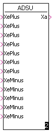
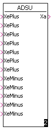

ABSWER ADD2 ADSU CHS COS DEG DIVK2 EHOX HLG LN LOG MULDI MULK2 MULT QUAD RAD REZI SIN SUB2 SQRT XHOY
 

Es wird der Cosinus vom Wert der Variablen am Eingang Xe gebildet und der Variablen am Ausgang Xa zugewiesen. Die Variable am Eingang Xe muß eine Winkelangabe im Bogenmaß enthalten.
Xa = cos(Xe)
| Parametername | Typ | Bedeutung |
|---|---|---|
| Xe | Float | Eingangwert in Bogenmaß |
| Xa | Float | Ausgangwert Xa = cos(Xe) |
Der Baustein konvertiert einen am Eingang Xe liegenden Winkel im Bogenmaß in einen am Ausgang Xa liegenden Winkel im Gradmaß.
Xa = deg(Xe)
| Parametername | Typ | Bedeutung |
|---|---|---|
| Xe | Float | Eingangwert Winkel in Bogenmaß |
| Xa | Float | Ausgangwert Winkel in Gradmaß |
Der Baustein liefert am Ausgang Xa den durch 2 dividierten Wert der Variablen am Eingang Xe.
Xa = Xe / 2
Hinweis:
Dieser Baustein arbeitet besonders schnell und sollte deshalb bei einer
Division durch 2 bevorzugt benutzt werden.
| Parametername | Typ | Bedeutung |
|---|---|---|
| Xe | Float | Eingangwert Xe |
| Xa | Float | Ausgangwert Xa |
Es wird die Funktion Xa = e^Xe gebildet. Bei Unter- oder Überschreiten des darstellbaren Zahlenbereichs wird die kleinste bzw. die größte darstellbare Zahl der Ausgangs- Variablen zugewiesen.
Xa = e^Xe
| Parametername | Typ | Bedeutung |
|---|---|---|
| Xe | Float | Eingangwert Xe |
| Xa | Float | Ausgangwert Xa = e^Xe |
Das Ausgangs-Signal Xa folgt dem Eingangs-Signal Xe mit einer konstanten Steigung und zwar so lange, bis der Ausgangswert den Eingangswert (Sollwert) erreicht hat. Über den Eingang Schalter wird der wirksame Eingang Xe1 oder Xe2 für den Sollwert bestimmt.
Die Richtung der Änderung zwischen Eingang (Sollwert) und Ausgang (Istwert) bestimmt, welcher Eingang der Steigung (Steigung1 oder Steigung2) gerade gilt:Die Steigung1 bzw. Steigung2 gibt an, um welches Delta Y sich das Ausgangs-Signal pro Sekunde ändern soll. Soll z. B. das Ausgangs-Signal bei einem Sprung des Eingangs-Signals von 0 auf 100 diesem in 40s folgen, so gilt: S=100/40=2,5.
Über den Eingang Halten kann der Hochlauf angehalten werden (Halten=1).
Über den Eingang Setzen kann der Hochlaufgeber auf den am Eingang
Setzwert anliegenden Wert gesetzt werden (Setzen=1).
| Parametername | Typ | Bedeutung |
|---|---|---|
| Schalter | Word | Umschaltung zwischen Xe1 und Xe2 |
| Xe1 | Float | Eingangswert bei Schalter = 0 |
| Xe2 | Float | Eingangswert bei Schalter = 1 |
| Steigung1 | Float | Steigung wenn Xe - Xa > 0 |
| Steigung2 | Float | Steigung wenn Xe - Xa < 0 |
| Halten | Word | Hochlauf Stop wenn 1 |
| Setzen | Word | Xa auf Setzwert setzen wenn 1 |
| Setzwert | Float | Anfangswert |
| Xa | Float | Ausgangwert Xa |
Der Variablen am Ausgang Xa wird der natürliche Logarithmus der Variablen am Eingang Xe zugewiesen.
Xa = ln(Xe)
Für Eingangswerte Xe < = 0, für die der Logarithmus nicht definiert ist, wird der Ausgangs-Variablen der Wert 1.0 zugewiesen.
| Parametername | Typ | Bedeutung |
|---|---|---|
| Xe | Float | Eingangwert Xe |
| Xa | Float | Ausgangwert Xa |
Der Variablen am Ausgang Xa wird der Logarithmus der Variablen am Eingang Xe zugewiesen.
Xa = log(Xe)
Für Eingangswerte Xe < = 0, für die der Logarithmus nicht definiert ist, wird der Ausgangs-Variablen der Wert 1.0 zugewiesen.
| Parametername | Typ | Bedeutung |
|---|---|---|
| Xe | Float | Eingangwert Xe |
| Xa | Float | Ausgangwert Xa |
Der Wert der Variablen am Eingang Xe wird mit 2 multipliziert und das Ergebnis der Variablen am Ausgang Xa zugewiesen.
Xa = Xe * 2
Hinweis:
Dieser Baustein arbeitet besonders
schnell und sollte deshalb bei einer Multiplikation mit 2 benutzt werden.
| Parametername | Typ | Bedeutung |
|---|---|---|
| Xe | Float | Eingangwert Xe |
| Xa | Float | Ausgangwert Xa |
Der Wert der Variablen am Eingang Xe wird ins Quadrat gesetzt und das Ergebnis der Variablen am Ausgang Xa zugewiesen.
Xa = Xe ^ 2
| Parametername | Typ | Bedeutung |
|---|---|---|
| Xe | Float | Eingangwert Xe |
| Xa | Float | Ausgangwert Xa = Xe ^ 2 |
Die Funktion wandelt einen am Eingang Xe liegenden Winkelwert im Gradmaß in den entsprechenden Winkelwert im Bogenmaß, der der Variablen am Ausgang Xa zugewiesen wird.
Xa = rad(Xe)
| Parametername | Typ | Bedeutung |
|---|---|---|
| Xe | Float | Eingangwert Xe |
| Xa | Float | Ausgangwert Xa = rad(Xe) |
Die Funktion errechnet vom am Eingang Xe liegenden Wert den Kehrwert, der der Variablen am Ausgang Xa zugewiesen wird.
Xa = 1 / Xe
| Parametername | Typ | Bedeutung |
|---|---|---|
| Xe | Float | Eingangwert Xe |
| Xa | Float | Ausgangwert Xa = 1 / Xe |
Es wird die Funktion Xa = sin (Xe) gebildet. Der Winkel muß am Eingang Xe im Bogenmaß anliegen.
Xa = sin(Xe)
| Parametername | Typ | Bedeutung |
|---|---|---|
| Xe | Float | Eingangwert Xe |
| Xa | Float | Ausgangwert Xa = sin(Xe) |
Es wird die Quadratwurzel aus Xe gebildet und dem Ausgang Xa zugewiesen.
Xa = sqrt(Xe)
| Parametername | Typ | Bedeutung |
|---|---|---|
| Xe | Float | Eingangwert Xe |
| Xa | Float | Ausgangwert Xa = sqrt(Xe) |
Es wird die Potenz aus Xe hoxh Ye gebildet und dem Ausgang Xa zugewiesen.
Xa = Xe ^ Ye
| Parametername | Typ | Bedeutung |
|---|---|---|
| Xe | Float | Eingangwert x |
| Ye | Float | Eingangwert y |
| Xa | Float | Ausgangwert Xa = Xe ^Ye |
WISAG Automatisierungstechnik GmbH & Co. KG
Ohmweg 11-15, D-68199 Mannheim
Stand: 04.02.2011 - Bearbeiter: HJ Werder